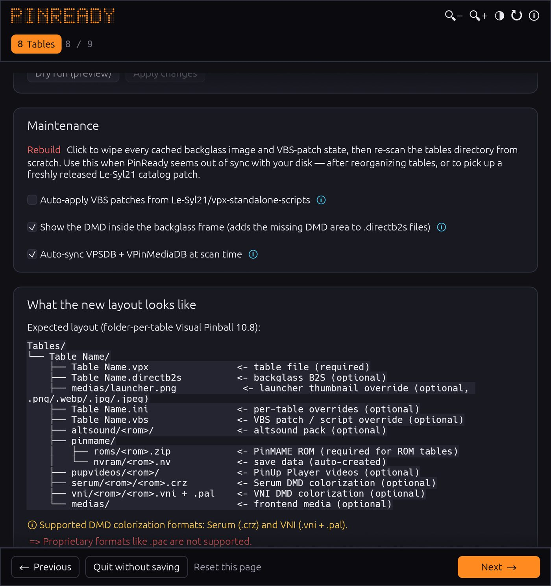

Installationsguiden
Första gången du startar PinReady leder en guide dig genom nio sidor. Varje alternativ har en liten infomarkering: håll muspekaren över den, eller klicka på den i en pincab, för en förklaring med vanliga ord.
Dina svar skrivs till VPinballX.ini, Visual Pinballs inställningsfil, och kommentarerna i filen bevaras. Om filen inte finns än låter PinReady först Visual Pinball skapa sin kompletta standardfil och lägger sedan till dina val i den. Du kan öppna guiden igen när som helst med knappen Konfiguration i startaren eller med pinready --config: varje fält visar dina nuvarande inställningar. De flesta inställningar kan också ändras under spelets gång, från Visual Pinball-menyn på F12.
Återställ konfigurationen kastar alla svar, sparar den globala VPinballX.ini som VPinballX.ini.reset-backup och börjar om på sida ett. Dina bord lämnas ifred.
1. Skärmar

Den första sidan visar det upptäckta systemet (till exempel Ubuntu 24.04 LTS · X11 · GNOME) så att felrapporter alltid har sitt sammanhang, låter dig välja gränssnittsspråk och installerar Visual Pinball vid behov.
- Antal skärmar: 1 för en vanlig dator, 3 eller 4 för en komplett pincab (spelplan, backglass, DMD och en valfri topper).
- Roller: varje bildskärm visas med namn, upplösning, uppdateringsfrekvens (Hz) och fysisk storlek. PinReady föreslår en roll utifrån skärmstorleken: den största blir spelplan, sedan backglass, DMD och topper. Ändra vilken roll som helst i listan, eller sätt en skärm till Oanvänd.
- Visningsläge: Skrivbord (i fönster, för en vanlig dator), Skåp (spelplanen ritad för en liggande skärm, backglass och DMD på egna skärmar) eller Hel enskild skärm (spelplan och backglass på en hög skärm). Det växlar till Skåp när du har 2 skärmar eller fler, och du kan fortfarande ändra det.
- Extern DMD-enhet (ZeDMD, PinDMD…): kryssa i den om du har en fysisk poängskärm; Visual Pinball hittar den när ett bord startar.
- Inaktivera pekskärm: stänger av pekskärmsöverlägget i VPX, användbart när spelplanen inte är en pekskärm eller när du styr skåpet på distans.
- Skåpets mått: lockbar-bredd och -höjd, spelplanens lutning, din längd och var du står. Dra i handtagen på ritningen eller skriv in värdena; de ger 3D-vyn rätt perspektiv.
2. Bild

Grafikinställningar för spelplanen. Sidans råd: börja med standardvärdena och justera sedan efter din maskin.
- Synkronisering: Ingen synk, Vertikal synk, Adaptiv synk eller Frame pacing, som är Visual Pinballs standard. Varje val förklarar sin avvägning mellan jämnhet och fördröjning av inmatning.
- FPS-gräns: Max som standard, vilket följer uppdateringsfrekvensen på din spelplansskärm så att ingen bild ritas snabbare än skärmen kan visa den. Tryck på Välj ett tal för att ange en egen gräns. Om din skärm klarar mer än vad sidan visar, ställ först in dess uppdateringsfrekvens i systemets skärminställningar (PinReady kan inte ändra den) och kom sedan tillbaka.
- Komprimera texturer (på som standard) packar bordets bilder så att de tar mindre grafikminne, till priset av en något längre första laddning av varje bord.
- Bildkvalitet: supersampling, MSAA, kantutjämning i efterbehandling (FXAA med flera), skärpning, reflektioner och maximal texturstorlek.
- Visa FPS (på som standard) visar en bildräknare i spelet, bra för att kontrollera dina inställningar direkt efter installationen.
- Rund boll (på som standard) hindrar bollen från att se lite äggformad ut när den rör sig snabbt. Rent kosmetiskt.
- Visuella effekter: mjuka skuggor (ambient occlusion), sken kring starka lampor, rörelseoskärpa på bollen, skarpare texturer i sned vinkel, reflektioner över hela bordet, förrenderade bilder samt mjukhet hos boll och ramper. Varje effekt visar det rekommenderade värdet; om ett spel hackar, stäng först av dem längst ned i listan.
3. 3D

Två valfria block, båda avstängda som standard eftersom ett skåp inte behöver dem.
- Virtuell verklighet (VR): spela i ett headset. Du behöver ett headset och ett VR-program (en OpenXR-runtime som SteamVR eller Monado) som körs på datorn. När det är aktiverat väljer du när VR startar, headsetets uppdateringsfrekvens, vad skrivbordet visar under tiden och ljudrouting.
- Stereoskopisk 3D: en 3D-bild för en 3D-tv eller 3D-glasögon. När det är aktiverat väljer du 3D-format och justerar ögonavstånd, ljusstyrka och färgmättnad.
4. Kontroller

Varje åtgärd i Visual Pinball har två kolumner, Tangentbord och Joystick, och båda fungerar sida vid sida. Klicka på Tilldela och tryck på en tangent eller en knapp: en tangent fyller tangentbordskolumnen, en joystickknapp joystickkolumnen. Tilldela alla automatiskt går igenom varje åtgärd i ett svep. Viktiga åtgärder (flippers, MagnaSave, start, credit, skjut ut boll…) visas först; avancerade ligger ett klick bort. PinReady varnar dig när en tangent redan används av en annan åtgärd.
Flipperkontrollkort. När ett Pinscape KL25Z-, Pinscape Pico-, DudesCab- eller PinOne-kort upptäcks väljer PinReady rätt profil och fyller joystickkolumnen med kortets knapplayout från fabrik; Visual Pinball sköter sedan plungern och accelerometerns nudge själv. Välj Ingen för att tilldela varje knapp själv. En upptäckt spelkontroll kan också användas för flippers, plunger och nudge.
KL25Z (KL Shield V5.1 / Brain / Rig Master)
| Knapp | Etikett på kortet | VPX-åtgärd |
|---|---|---|
| 0 | START | Start |
| 1 | EXTRA-B | ExtraBall |
| 2 | COIN1 | Credit1 |
| 3 | COIN2 | Credit2 |
| 4 | L BALL | LaunchBall |
| 5 | EXIT | ExitGame |
| 7 | L FLIPP | LeftFlipper + LeftStagedFlipper |
| 8 | R FLIPP | RightFlipper + RightStagedFlipper |
| 9 | L MAGNA | LeftMagna |
| 10 | R MAGNA | RightMagna |
| 11 | FIRE | Lockbar |
| 13 | DOOR | CoinDoor |
| 14 | SERVICE EXIT | Service1 |
| 15 | SERVICE - | Service2 |
| 16 | SERVICE + | Service3 |
| 17 | ENTER | Service4 |
| 19 | VOL- | VolumeDown |
| 20 | VOL+ | VolumeUp |
Pinscape Pico (OpenPinballDevice)
| Knapp | Etikett på kortet | VPX-åtgärd |
|---|---|---|
| 0 | 开始 | Start |
| 1 | 退出 | ExitGame |
| 2 | 额外球 | ExtraBall |
| 3 | 投币 1 | Credit1 |
| 4 | 投币 2 | Credit2 |
| 5 | 投币 3 | Credit3 |
| 6 | 投币 4 | Credit4 |
| 7 | 发球 | LaunchBall |
| 8 | 开火 | Lockbar |
| 9 | 左 Flipper | LeftFlipper |
| 10 | 右 Flipper | RightFlipper |
| 11 | 上方左 Flipper | LeftStagedFlipper |
| 12 | 上方右 Flipper | RightStagedFlipper |
| 13 | 左 MagnaSave | LeftMagna |
| 14 | 右 MagnaSave | RightMagna |
| 16 | Slam Tilt | SlamTilt |
| 17 | 投币门 | CoinDoor |
| 18 | 服务取消 | Service1 |
| 19 | 服务下 | Service2 |
| 20 | 服务上 | Service3 |
| 21 | 服务确认 | Service4 |
| 22 | 左 Nudge | LeftNudge |
| 23 | 前 Nudge | CenterNudge |
| 24 | 右 Nudge | RightNudge |
| 25 | 音量加 | VolumeUp |
| 26 | 音量减 | VolumeDown |
DudesCab (Arnoz)
| Knapp | Etikett på kortet | VPX-åtgärd |
|---|---|---|
| 0 | 开始 | Start |
| 1 | ExtraBall | ExtraBall |
| 2 | Coin1 | Credit1 |
| 3 | Coin2 | Credit2 |
| 4 | LaunchBall | LaunchBall |
| 5 | Return | ExitGame |
| 7 | Flipper Left | LeftFlipper + LeftStagedFlipper |
| 8 | Flipper Right | RightFlipper + RightStagedFlipper |
| 9 | Magna Left | LeftMagna |
| 10 | Magna Right | RightMagna |
| 12 | 开火 | Lockbar |
| 13 | Door | CoinDoor |
| 14 | ROM Exit | Service1 |
| 15 | ROM - | Service2 |
| 16 | ROM + | Service3 |
| 17 | ROM Enter | Service4 |
| 18 | VOL - | VolumeDown |
| 19 | VOL + | VolumeUp |
CSD PinOne
| Knapp | Etikett på kortet | VPX-åtgärd |
|---|---|---|
| 0 | VPX 1 | RightFlipper |
| 1 | VPX 2 | RightMagna |
| 2 | VPX 3 | LeftFlipper |
| 3 | VPX 4 | LeftMagna |
| 4 | VPX 5 | ExtraBall |
| 5 | VPX 6 | Start |
| 6 | VPX 7 | Credit1 |
| 7 | VPX 8 | ExitGame |
| 8 | VPX 9 | Lockbar |
| 15 | VPX 16 | VolumeUp |
| 16 | VPX 17 | VolumeDown |
| 17 | VPX 18 | CoinDoor |
| 18 | VPX 19 | Service1 |
| 19 | VPX 20 | Service2 |
| 20 | VPX 21 | Service3 |
| 21 | VPX 22 | Service4 |
| 23 | VPX 24 | LaunchBall |
按钮编号是 SDL 报告的编号，从 0 开始计数。配置中未映射的按钮不会列出。
5. 配件

DOF 效果（灯光和玩具）
VPX 10.8.1 standalone 内置 DOF（Direct Output Framework），可驱动机柜的电磁铁、灯光、震动马达、敲击器或警示灯。它只需要一份描述你硬件的配置。该页面会一步步带你完成：
- 在 VPUniverse ConfigTool 上创建一个免费账号。
- 创建一个与你的机柜相匹配的table，添加它的输出系统（Pinscape、LedWiz、PinOne、DudesCab、PacLed、TeensyStripController……），并把你的设备连接到各个输出。
- 点击生成，下载 zip 并解压到目标文件夹：在文件管理器中打开文件夹按钮会带你到那里。
- 打开 DOF：Visual Pinball 出厂时禁用了所有插件，因此在你打开之前，游戏中不会触发任何效果。
PinReady 还能通过 USB 查找你的输出板，并告诉你在 ConfigTool 中应选哪种控制器类型。在 Linux 上，它会显示、复制或安装让你有权访问该板的 udev 规则。依次让每个输出发出脉冲并带有内置安全停止的输出测试器，目前只能在模拟器上运行。
Head tracking（头部追踪）
适用于在 backglass 或 topper 上装有 Kinect 或摄像头的机柜：table的透视会随你的头部移动。一键即可下载 head tracking 插件及其演示，启用插件，把 Visual Pinball 切换到它所需的窗口视图模式，并打开演示，方便你安装摄像头驱动并确认已追踪到你。Intel Mac 上不可用。
6. Tilt / Nudge


用于检测你摇晃（nudge）机柜的加速度计的设置。
- Nudge 传感器类型：游戏控制器适用于游戏手柄摇杆；意图传感器适用于带加速度计板（如 Pinscape 或 DudesCab）的机柜（它会忽略轻微振动，并把真正的猛推变成 nudge）；机柜传感器适用于快速、干净的传感器，其读数会按测量值直接应用。
- 强度：一次摇晃对球的推力有多大。实际上，这是唯一值得调整的设置。
- 死区：低于这个水平的微小读数会被忽略，这样振动和传感器噪声就不会让球移动。
- 加速度计量程：这是你的板子的客观参数，而不是个人偏好。如果板子公布了量程，PinReady 会从板上读取，所选值不匹配时会提醒你。
- TILT 阈值：nudge 多用力会被游戏判定为 tilt。
摇晃机柜并观察实时视图：一个圆点显示每次摇晃，对照死区、nudge 阈值和 tilt 的圆环；越过红色圆环就表示 TILT。PinReady 还会记录测得的峰值，在 tilt 角度超出传感器范围时提醒你，并请你确认板子的安装方向，因为板子装反会让 nudge 的方向互换或镜像。
该页面使用 VPX 自己的机柜模型和默认值，模拟 Visual Pinball 对每次 nudge 的处理。蓝点表示虚拟摆锤：VPX 依据摆锤来判定 tilt，它会累加一连串的撞击，而红点只是传感器读数。摆锤恰好在 VPX 会判定 tilt 的时候碰到 tilt 圆圈。想试试的话，就左右摇晃机柜，连续用力拍击，每一下比上一下稍重一点。
VPX 如何读取 nudge
- 左右方向比前后方向更灵敏。VPX 会把左右方向的读数乘以 4/3，而且左右猛推通常比向前猛推更容易做到。
- 推才算，拉从不算。VPX 寻找的是把机柜从你身边推开的意图。朝你而来的力会被置为零，无论多大，所以你推完之后机柜晃回来不会算作第二次 nudge：它只是在稳定下来。页面会把这个区域画在玩家一侧。
- 撞击只有超过门限才会被记录（1 m/s²）。之后 VPX 会构造一个持续 25 ms、力度等同于所测峰值的短推力；此后不再使用传感器的原始读数。
- 连续撞击会累加到摆锤中，所以连拍四下可能会 tilt，而单独一下永远不会。
背后的数学
页面展示了 VPX 计算所用的公式，每种传感器类型一个区块（当前所选类型是展开的），然后是它们共用的机柜模型和铅垂线。单位：加速度为 m/s²，时间为 ms，tilt 角度为 °。这些区块位于应用本身的 Nudge & tilt 页面上。
7. 音频

Visual Pinball 在两个设备上播放声音，PinReady 会为每个设备列出你的声卡：
- Backglass：音乐、语音和一般游戏音效。
- Playfield：机械声（flipper、弹射器、滚动的球）。若要使用环绕声或 SSF，这里必须是多声道输出。
Playfield 输出模式。PinReady 会根据检测到的声道数预先选择一种模式，并显示扬声器布局图及其所需的接线。
| 模式 | 适用于 |
|---|---|
| 2 声道 — 前置立体声 | 普通立体声，两个扬声器都在机柜前部。 |
| 2 声道 — 后置立体声 (lockbar) | 普通立体声，两个扬声器靠近 lockbar，也就是靠近玩家。 |
| 5.1 — 后置在 lockbar | 增加前后定位；后声道位于 lockbar。需要 6 声道声卡。 |
| 5.1 — 前置在 lockbar | 同上，但前声道位于 lockbar。请选择与你接线相符的一项。 |
| SSF — 侧置与后置在 lockbar（旧版） | 使用较旧混音方式的环绕声反馈 (Surround Sound Feedback)。 |
| SSF — 侧置与后置在 lockbar（新版） | 使用较新混音方式的环绕声反馈，推荐使用。 |
7.1 声卡的接线，推荐的 SSF 设置（插孔颜色可能因声卡而异）：
| 插孔 | 声道 | 机柜连接 |
|---|---|---|
| 绿色（前置） | FL / FR | Backglass 扬声器（音乐）或 2.1 系统 |
| 黑色（后置） | BL / BR | Playfield 顶部激振器（backglass 一侧） |
| 灰色（侧置） | SL / SR | Playfield 底部激振器（lockbar / 玩家一侧） |
| 橙色（中置/低音） | FC / LFE | 低音炮或低音震动器（可选） |
音量与测试。设置音乐和 playfield 的音量，然后检查你的接线：测试 1 在 backglass 上循环播放音乐，并带有左右平衡；测试 2 依次在每个 playfield 扬声器上播放声音，并让一颗滚动的球从上到下、从左到右扫过。如果球在前后方向上移动错误，请更改输出模式；如果是左右方向错误，请检查接线。只有 3 个插孔（绿、粉、蓝）的声卡通常可以切换为 5.1 或 7.1：请参阅 Linux、Windows、macOS 的指南。
8. table

选择存放你的table的文件夹，每张table一个子文件夹：这是 Visual Pinball 10.8.1 使用的布局。
Tables/
└── Table Name/
├── Table Name.vpx table file (required)
├── Table Name.directb2s backglass (optional)
├── Table Name.ini per-table settings (optional)
├── Table Name.vbs script patch (optional)
├── medias/launcher.png launcher picture (optional)
├── pinmame/roms/<rom>.zip ROM (required for ROM tables)
├── altsound/<rom>/ alt-sound pack (optional)
├── pupvideos/<rom>/ PinUP Player videos (optional)
├── serum/<rom>/<rom>.crz Serum colorization (optional)
└── vni/<rom>/<rom>.vni VNI colorization, with .pal (optional)支持 Serum（.crz）和 VNI（.vni + .pal）格式的 DMD 上色；不支持 .pac 等专有格式。
- 把你的收藏整理成新布局。让 PinReady 指向一个文件夹（table收藏、旧的 VPX 安装目录，甚至整个硬盘）。它会为里面的所有内容建立索引，然后为每张table建立独立的文件夹，放入属于它的 ROM、backglass、PUP 包、alt-sound、上色文件和音乐。如果你的table已经是每张一个文件夹，它们会留在原处，只补上缺失的文件。先运行一次试运行预览，然后选择复制（安全）或移动文件。
- Visual Pinball Standalone 兼容性（默认关闭）：PinReady 会识别每张table内置的脚本，当 Le-Syl21/vpx-standalone-scripts 有对应补丁时，会把打过补丁的
.vbs放在.vpx旁边。你自己的.vbs会保留为<table>.pre_standalone.vbs。 - 目录丰富（默认开启）：把每张table与 Virtual Pinball Spreadsheet 进行匹配，并从 VPinMediaDB 下载 backglass 图片和音频片段到该table的
medias文件夹。首次同步会下载约 7 MB 的目录数据，每个匹配到的table还会再下载几 MB。离线机柜请把它关闭。
9. 系统

可选的便利功能，最适合专用机柜：
- 启动时自动运行 PinReady。
- 菜单快捷方式和
.vpx文件关联：把 PinReady 和 Visual Pinball 加入应用程序菜单（Linux 上的 GNOME、KDE 或 XFCE，macOS 上的启动台，Windows 上的开始菜单），并用 Visual Pinball 打开.vpx文件。取消勾选并再次完成向导即可移除。 - 桌面快捷方式，在 GNOME 上还有固定到程序坞。
- 自建镜像：从你自己的服务器而不是 GitHub 获取脚本补丁和媒体数据库。